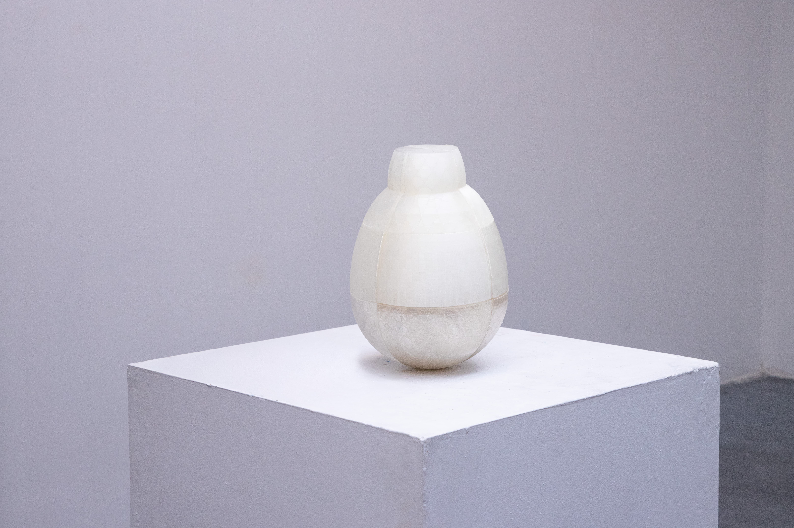
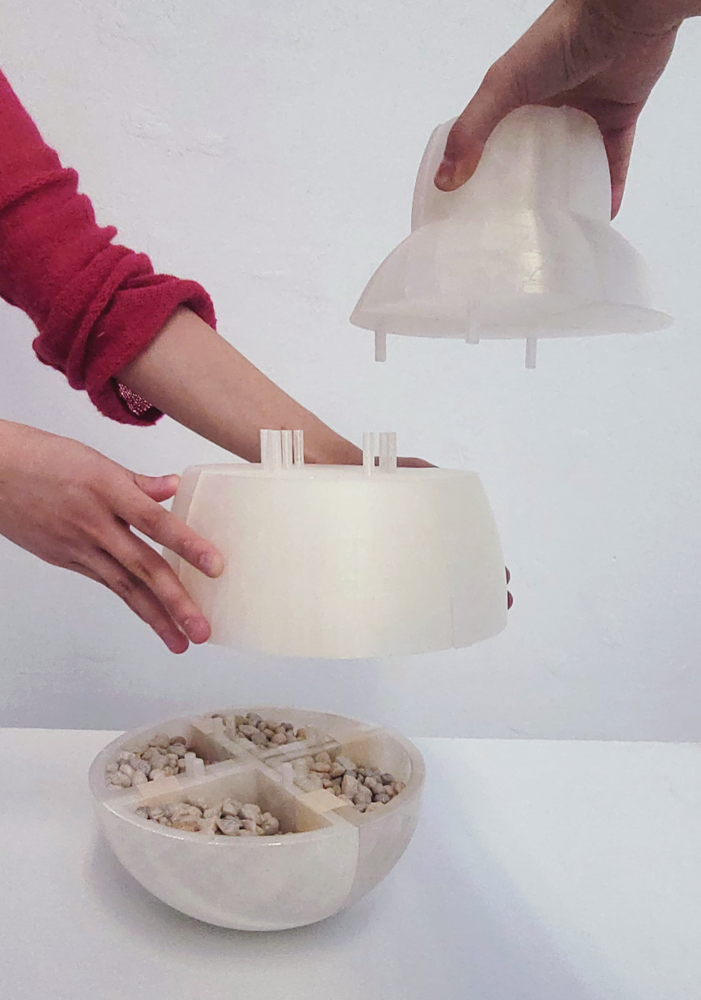

Parent-child relationships are often layered with both love and tension, shaped by unspoken expectations, past experiences, and the weight of personal struggles. This piece explores the coexistence of gratitude and resentment, admiration and pain.
Just as a child can never fully understand a parent’s heart, nor can a parent completely grasp a child’s, conflicts inevitably arise from their differing perspectives. While a child may try to understand their parents as much as possible, recognizing their passion and sacrifices, there are moments when it feels as though they forget that children, too, have emotions of their own.
Expressing complex emotions about a loved one can feel like an act of betrayal, as if acknowledging hurt diminishes gratitude. But emotions are rarely simple. This roly-poly sculpture embodies that dynamic—the push and pull of love and tension, the shifts in understanding over time, and the deep, unbreakable bond that remains.
No matter how far it tilts, it always returns to center—just as, despite everything, love persists.

